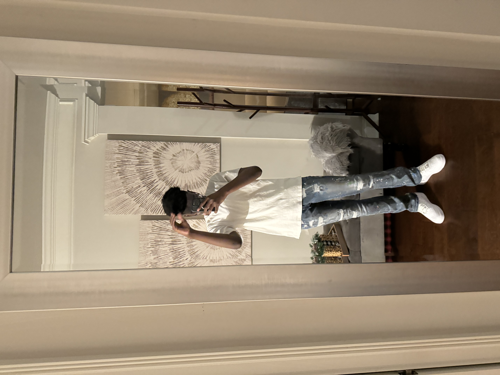

We are in the YGT 10 cohort. We all reside in or near Atlanta and we all
have very great goals. We are very hard working, passionate, and determined kids. We
joined YGT in order to gain more leadership knowledge about coding and technology. Down below
you can see specifics about each person down below!
Tamia Marie
My name is Tamia Marie, I’m 14 years old. I’m an A and b honor roll student. My favorite colors pink are black, and I like to cheer, rap, and model!
Ygt helped me get a better understanding with computers.
Meando Small
I’m 14 lived in New York for most of my life love basketball,cars and games good at working together.
YGT helped me get better at coding.

Shamarah Cropper
My name is Shamarah Cropper and I'm in the 10th grade! I attend the best school in Souht
Fulton, Langston Hughes High School. I am in many activities at school including
marching band, jass band, and concert band, (tuba and bass guitar) TSA (Technology Student Associating),
The national Beta Club, Step and I do our morning annoucments. I really enjoy making and playing music
and technology. In the future, I plan to become a software enginner who specializes in robotics,
game development and website building! Fun fact, my favorite holiday is valentines day! Ygt has helped me improve
my leadership and programming skills.